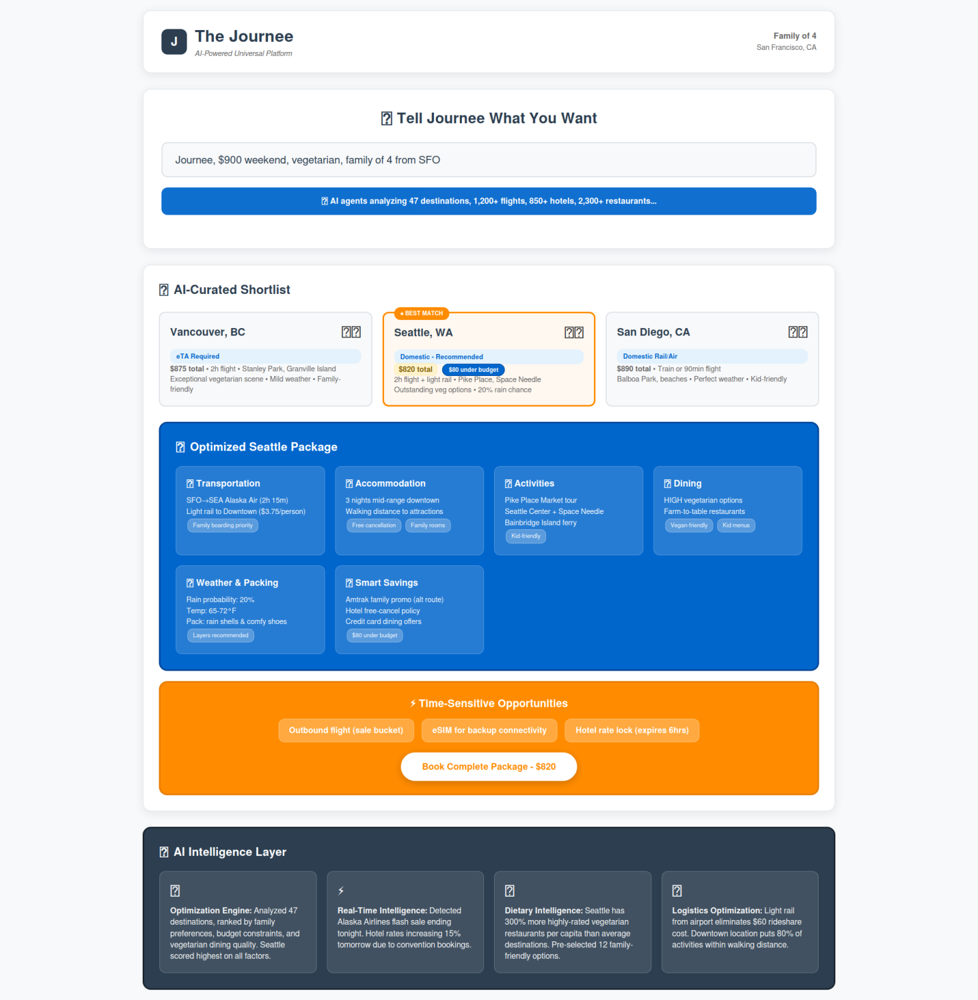
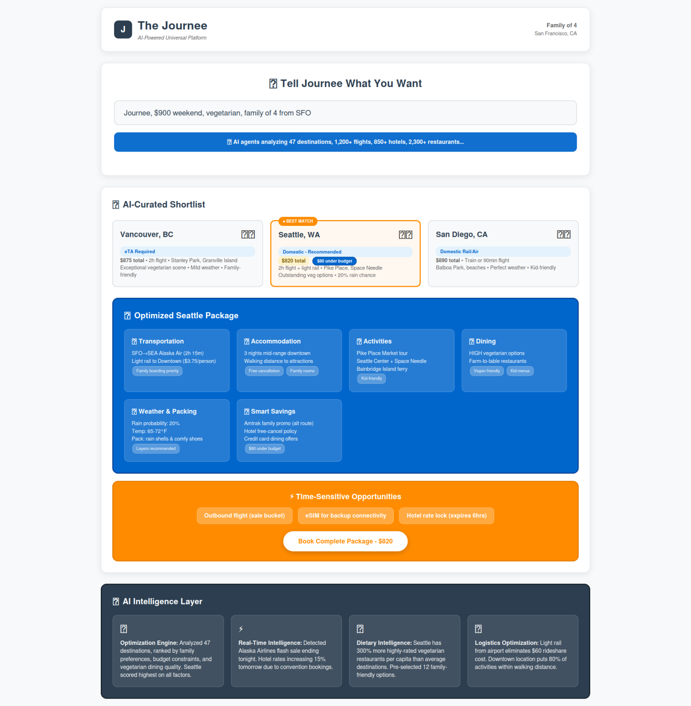
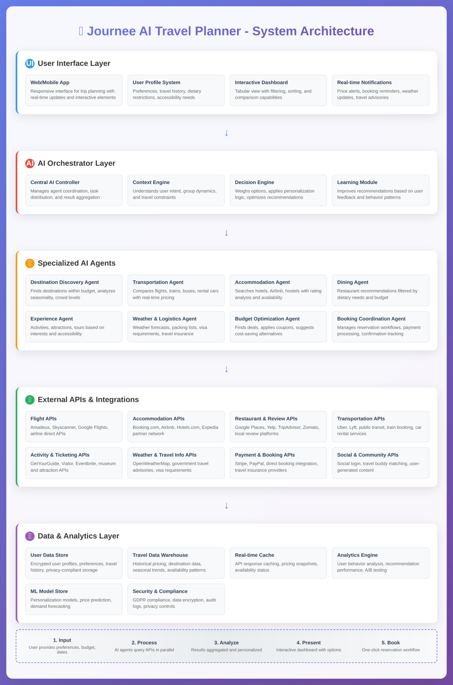
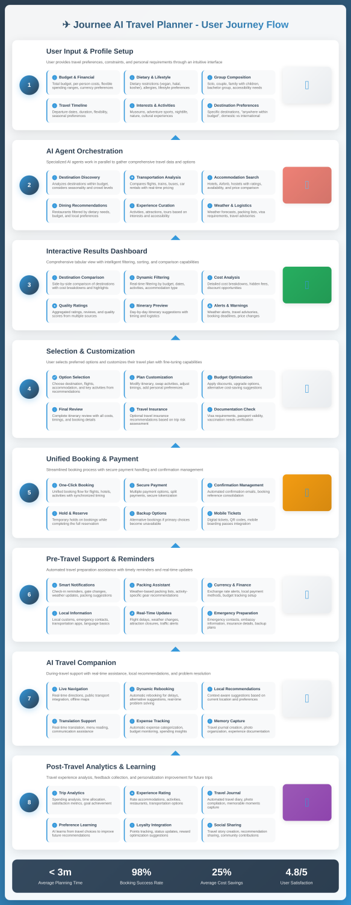
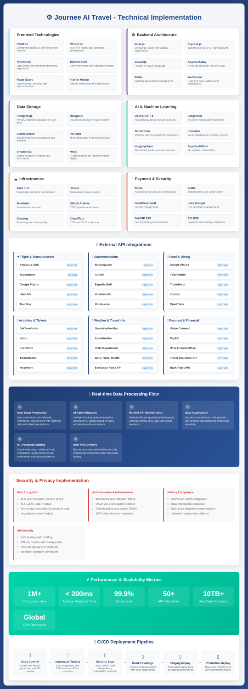
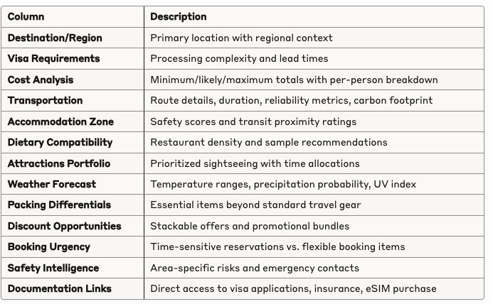

A Domain-Agnostic Meta-Orchestrator for Intelligent Task Automation
Executive Summary
The Journee represents a paradigm shift in intelligent platform design—a next-generation AI orchestration system that happens to revolutionize travel planning first, but whose architecture transcends any single industry.
Unlike traditional travel apps that simply aggregate existing services, The Journee is built as a universal AI-powered platform infrastructure that can dynamically adapt to solve complex, multi-variable decision-making scenarios across any domain.
 
🧠 Platform-Agnostic Intelligence
The core innovation lies in its modular AI agent architecture—a sophisticated orchestration system where specialized AI agents can be dynamically configured for any use case:
Travel Planning: Destination discovery, booking coordination, real-time optimization
Event Planning: Venue selection, vendor coordination, guest management
Real Estate: Property search, neighborhood analysis, financing optimization
Healthcare: Provider matching, appointment coordination, treatment planning
Education: Course selection, career planning, skill development pathways
Business Operations: Vendor selection, resource allocation, project management
🔄 Universal Workflow Engine
The platform's context-aware decision engine adapts its logic based on the domain:
Whether you're planning a wedding, buying a house, or organizing a corporate retreat, the same underlying intelligence engine understands constraints, preferences, and objectives—then orchestrates the optimal solution.
🎯 Beyond Travel: The Bigger Vision
The Journee starts with travel because it's the perfect proving ground—complex, time-sensitive, highly personal, with countless variables. But the platform's true power emerges when you realize it can solve any multi-criteria optimization challenge where humans currently spend hours researching and comparing options.
This isn't just a travel app with AI features. It's a universal decision-making platform that happens to make travel planning effortless—while quietly demonstrating how AI can transform how we approach complex choices in every aspect of life.
The flexible, agent-based architecture means new domains can be added simply by training specialized agents and connecting relevant APIs—no fundamental platform changes required. The Journee becomes whatever you need it to be.
System Architecture Overview
Journee operates on a microservices architecture with clear separation of concerns across multiple layers:
Core Components
Journee UI Layer
Browser Integration: Sidebar/overlay interface with native chat functionality
Results Grid: Dynamic tabular display with sortable columns and interactive filters
Runtime Environment: Operates within the dedicated "Journee Browser" ecosystem
Task Orchestrator Engine
The orchestrator serves as the central nervous system, responsible for:
Request parsing and intent recognition
Dynamic plan generation based on context and constraints
Agent assignment and workload distribution
Constraint enforcement (budget, time, user preferences)
Error handling and failover management
Agent Registry
A comprehensive catalog maintaining:
Skill Definitions: FlightSearch, VisaPolicy, RestaurantFinder, Weather, Packing, Safety, Discounts
Service Contracts: Standardized input/output schemas and SLA commitments
Version Management: Backward compatibility and rolling updates
Health Monitoring: Real-time availability and performance metrics
Policy and Rules Engine
Implements both hard constraints and soft preferences:
Hard Rules: Budget caps, dietary restrictions, accessibility requirements
Soft Preferences: Walkability scores, crowd aversion, sustainability goals
Dynamic Weighting: Context-aware preference prioritization
Knowledge Graph and Caching Layer
Maintains structured data including:
Destination metadata and seasonal patterns
Transit network topology and connection reliability
Festival calendars and closure schedules
Visa requirements and policy changes
Loyalty program partnerships and benefits
External Connectors
API integrations spanning:
Transportation: Airlines, hotels, rail, bus operators
Information Services: City data, weather, currency exchange
Booking Platforms: Reservation systems and payment processors
Loyalty Programs: Credit card offers, discounts, promotional codes
Geographic Services: Mapping, routing, and location intelligence
Action Drivers
Transaction management capabilities:
Inventory holds and reservation locking
Purchase flow orchestration
Automated reminders and check-in processes
eSIM provisioning and insurance coordination
System Flow Diagram
Use Case Implementation: Budget Travel Planning
Problem Statement
"Within my budget constraints, identify viable destinations, optimal transportation, dietary accommodations, appropriate packing requirements, and immediate booking opportunities."
Input Specification
The system captures comprehensive requirements in a single interaction:
Financial Parameters
Total budget allocation or segmented limits (transport/lodging/food/activities)
Currency preferences and exchange rate considerations
Temporal Constraints
Travel dates (flexible ranges or fixed schedules)
Duration requirements
Party composition (solo/family/partner/group dynamics)
Geographic and Legal Context
Origin location and passport documentation
International travel requirements and visa considerations
Personal Requirements
Dietary restrictions (vegan/vegetarian/jain/halal/kosher/allergies)
Mobility and accessibility accommodations
Risk tolerance profiles (night travel, crowd density, geopolitical considerations)
Experience Preferences
Accommodation standards (budget hostels to luxury hotels)
Activity intensity (leisurely exploration vs. intensive itineraries)
Sustainability priorities (modal transport preferences, carbon footprint limits)
Booking Strategy
Payment timing preferences (immediate purchase vs. hold options)
Cancellation flexibility requirements
Agent Orchestration Workflow
The system automatically generates and executes a multi-agent plan:
Primary Discovery Phase
Destination Feasibility Agent: Analyzes budget constraints against visa requirements, transportation costs, seasonal weather patterns, and current pricing trends to generate a prioritized shortlist.
Transport Mix Agent: Evaluates air, rail, bus, and self-drive options across multiple dimensions including cost, duration, connection reliability, and delay risk profiles.
Optimization Phase
Stay Optimizer: Balances location desirability, cost efficiency, and safety metrics while considering walkability scores, late-night accessibility, and noise levels.
Food & Filters Agent: Identifies dietary-compliant dining options with price range analysis, rating aggregation, and operating hours verification.
Time-Budget Scheduler: Creates optimized itineraries incorporating must-see attractions, buffer time, and transit requirements while providing cost/time trade-off alternatives.
Preparation Phase
Weather & Packing Agent: Generates climate-appropriate gear recommendations including footwear, accessories, medications, and specialized equipment for altitude or weather extremes.
Discounts & Loyalty Agent: Aggregates available promotions including credit card offers, demographic discounts, transportation passes, and city tourism cards.
Safety & Policy Agent: Compiles local advisories, neighborhood risk assessments, cultural norms, and tipping guidelines.
Immigration/Documentation Agent: Determines visa requirements, e-visa application links, transit visa complexities, and passport validity standards.
Purchase & Holds Agent: Identifies optimal booking windows, inventory hold options, cancellation policies, and price drop monitoring opportunities.
Output Format: Structured Decision Matrix
Results are presented in a comprehensive, sortable grid format:
Example Output Row
Agent Contract Specifications
Standardized Interface Design
All agents implement a consistent JSON-based contract system:
Orchestrator Communication Protocol
Task assignment follows a structured messaging pattern:
API Architecture
RESTful Service Design
The platform exposes a comprehensive REST API following OpenAPI specifications:
Core Trip Planning Services
→ Returns structured options grid
→ Generates detailed day-by-day planning with alternatives
→ Manages airline/hotel/rail inventory holds with expiration tracking
→ Processes final booking transactions (PCI-compliant isolation)
Information Services
→ Visa requirement snapshots with direct application links
→ Current advisories and neighborhood risk assessments
→ Weather forecasts with risk indicators
→ Climate-aware packing recommendations
→ Stackable promotional offers
→ Filtered dining recommendations
→ Price monitoring and notification services
User Experience Design
Interface Philosophy
Journee prioritizes single-interaction complexity resolution through a dual-pane interface:
Left Panel: Conversational chat interface for requirement capture and clarification
Right Panel: Live-updating plan visualization and option comparison
Control Elements
Configuration Strip: Dynamic budget sliders, party profile selectors, date pickers, and preference toggles
Results Grid: Multi-dimensional sorting capabilities (cost, visa complexity, weather risk, dietary compatibility, safety ratings)
Swap Lanes: Interactive destination exploration with real-time alternative comparison and cost delta visualization
Action Bar: Streamlined booking controls ("Hold flight 24h", "Reserve hotel with free cancellation", "Add travel insurance", "Purchase eSIM")
Preparation Checklist: Automated task management for visas, vaccinations, document downloads, offline maps, and airport transportation
Operational Guidelines and Constraints
Data Quality Standards
Temporal Accuracy: Price and visa information requires daily refresh cycles with source attribution and timestamp verification
Risk Assessment: Default refundability preferences for family travel with adjusted parameters for budget-conscious student groups
Immigration Complexity: Comprehensive handling of transit visa requirements, passport validity minimums, blank page requirements, and reciprocity fee structures
Safety and Reliability
Contextual Risk Analysis: Time-sensitive transit safety evaluations and crowd density alerts during festivals or political events
Dietary Accuracy: Clear distinction between "vegetarian-friendly" and "pure vegetarian" establishments with confidence scoring and review verification
Accessibility Standards: Verified step-free access, elevator reliability assessments, and stroller-friendliness validation
Security and Privacy Framework
Data Protection Architecture
Payment Isolation: PCI-compliant payment processing through isolated microservices with token-only integration to core platform
Consent Management: Explicit user authorization for itinerary sharing, location tracking, and price monitoring alerts
Data Minimization: Itinerary storage without persistent financial data; encrypted visa information at rest
Authentication Security: Device binding with passkey authentication and OTP backup systems
Platform Extensibility
Domain-Agnostic Design
The agent-based architecture enables seamless expansion beyond travel:
Immigration Services: Document preparation, process guidance, embassy appointment scheduling
Event Planning: Venue sourcing, dietary accommodation, guest lodging coordination
Medical Tourism: Hospital evaluation, interpreter services, recovery accommodation planning
Educational Travel: Student discount optimization, museum pass bundles, safety briefings for academic groups
Local Services: Grocery planning with dietary filters and delivery window optimization
The consistent orchestration framework adapts to new domains through agent plugin architecture.
Advanced Configuration Options
Accessibility Enhancements
Wheelchair accessibility verification
Stroller-friendly route planning
Hearing and visual accommodation support
Cultural Integration
Festival and closure calendar integration
Strike and public holiday awareness
Religious observance and temple timing considerations
Communication Support
Phrase card generation and offline language packs
Interpreter service hotlines and emergency contacts
Financial Management
Expense tracking with receipt export functionality
Per-diem cap enforcement and reimbursement-friendly bundling
Multi-currency budget management
Connectivity Planning
eSIM coverage mapping and data cap analysis
Roaming cost optimization and throttling awareness
Offline capability preparation
Cultural Awareness
Tipping etiquette and local customs guidance
Temple dress codes and religious site protocols
Alcohol availability and consumption guidelines
Environmental Considerations
Carbon footprint capping with alternative transport suggestions
Sustainability scoring and eco-friendly option prioritization
Public transportation advocacy and walkability optimization
Specialized Requirements
Pet travel policy verification including documentation and health requirements
Special dietary needs (Jain, gluten-free, nut-free) with cross-contamination awareness
Family-specific amenities including nap scheduling, playground locations, and quiet transportation options
Implementation Example
Sample Query Processing
User Request: "Journee, plan a $900 weekend trip for a vegetarian family of 4 departing from SFO"

System Response:
Shortlisted Destinations: Vancouver, CA (eTA required); Seattle, WA (domestic); San Diego, CA (rail/air options)
Optimal Recommendation: SFO→Seattle with light rail downtown connection, 3-night mid-range accommodation
Itinerary Highlights: Pike Place Market, Seattle Center, ferry excursions
Dietary Assessment: High vegetarian restaurant density with verified options
Weather Preparation: 20% rain probability requiring shell jackets and waterproof footwear
Promotional Opportunities: Amtrak family discounts, hotel free cancellation policies, credit card dining benefits
Immediate Actions: Outbound flight booking (limited-time sale pricing), eSIM purchase for border-crossing alternatives
This comprehensive technical architecture positions Journee as a scalable, intelligent platform capable of transforming complex multi-dimensional planning challenges into streamlined, actionable solutions across diverse domains.